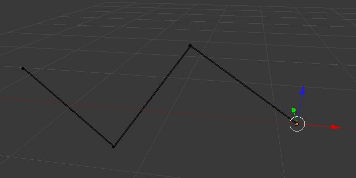
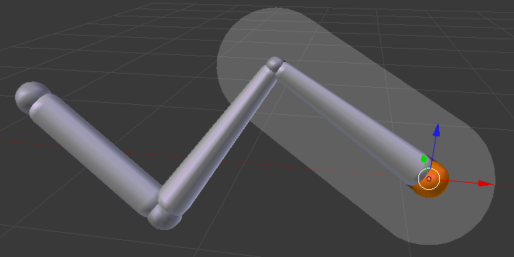
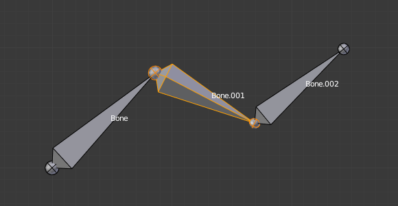
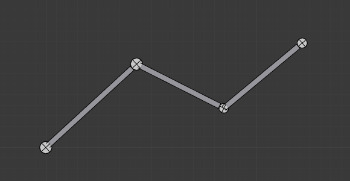

Display Panel¶
Reference
| Mode: | All Modes |
|---|---|
| Panel: |

The Display panel.
This controls the way the bones appear in 3D View; you have four different visualizations you can select.
Bone Types¶
Blender has four basic bone visualization: Octahedral, Stick, B-Bone, Envelope and Wire.

Octahedral bone display. |

Stick bone display. |

B-Bone bone display. |

Envelope bone display. |
{kind=link}
{kind=link}
- Octahedral bone
This is the default visualization, well suited for most of editing tasks. It materializes:
- The bone root ("big" joint) and tip ("small" joint).
- The bone "size" (its thickness is proportional to its length).
- The bone roll (as it has a square section).
Note the 40° rolled Bone.001 bone.
- Stick bone
This is the simplest and most non-intrusive visualization. It just materializes bones by sticks of constant (and small) thickness, so it gives you no information about root and tip, nor bone size or roll angle.

Note that Bone.001 roll angle is not visible (except by its XZ axes).
- B-Bone bone
This visualization shows the curves of "smooth" multi-segmented bones; see the Bendy Bones for details.
An armature of B-Bones, in Edit Mode.

The same armature in Object Mode.
- Envelope bone
This visualization materializes the bone deformation influence. More on this in the bone page.
- Wire bone
This simplest visualization shows the curves of "smooth" multi-segmented bones.

An armature of Wire, in Pose Mode.

The same armature in Edit Mode.
{kind=link}
{kind=link}
{kind=link}
Draw Options¶
- Names
- When enabled, the name of each bone is drawn.
- Colors
- This is only relevant for Pose Mode, and is described in detail there.
- Axes
- When enabled, the (local) axes of each bone are drawn (only relevant for Edit Mode and Pose Mode).
- X-Ray
- When enabled, the bones of the armature will always be drawn on top of the solid objects (meshes, surfaces, ...) -- i.e. they will always be visible and selectable (this is the same option as the one found in the Display panel of the Object data tab). Very useful when not in Wireframe mode.
- Shapes
- When enabled, the default standard bone shape is replaced, in Object Mode and Pose Mode, by the shape of a chosen object (see Shaped Bones for details).
- Delay Refresh
- When enabled, the bone does not deform its children when manipulating the bone in pose mode.